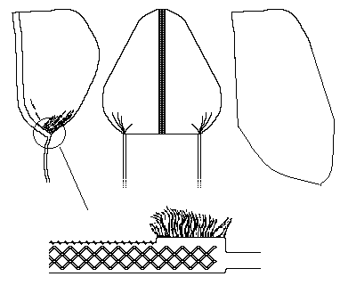

This small white linen coif is attributed to St. Birgitta of Sweden. It was housed at the Birgittine convent of Marienforst near Bonn, and more recently owned by th Birgittine convent of Maria Refugie in Holland.
It is made of two similar halves, joined by a linen lace. The corners are drawn into a find pleating. The edges are embroidered. There was a neck band on each side to be tied into place.
Return to Caps and Coifs
Some Clothing of the Middle Ages - Hats - St. Birgitta's Coif, by I. Marc Carlson, Copyright 1998,1999. This code is given for the free exchange of information, provided the Author's Name is included in all future revisions, and no money change hands-